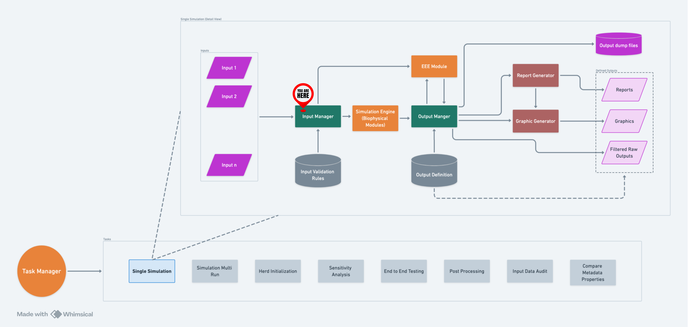
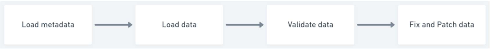
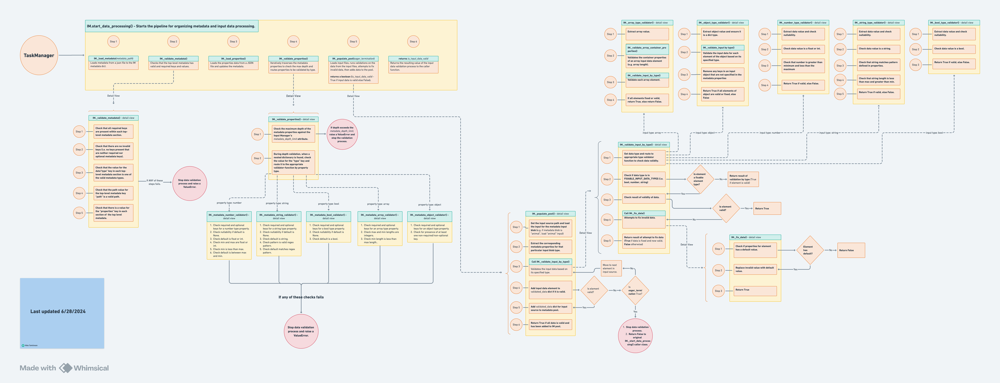

Input Manager#
Overview#
The Input Manager (IM) serves as an upgrade and update to the previous method of input data management in the RuFaS model.
Previously RuFaS would take its input from a series of json files, csv files, and SQLite DBs. This posed a number of challenges for running the model under different scenarios and starting conditions. Additionally, it suffered from scalability and validation issues.
The IM addresses these issues with these functionalities and features:
Differentiation of critical inputs from non-critical inputs. Critical inputs are inputs without which the simulation cannot run whereas non-critical inputs are inputs which can be fixed on the fly should they not exist or are not in the correct form or expected conditions.
Input data validation to ensure that the structure of the data is usable and the values are within predefined ranges and/or follow specified patterns.
Fixing non-critical data inputs which make validations fail.
Terminating a simulation when critical inputs make data validations fail.
Reporting its activities’ logs to Output Manager’s logs pool.
Being the Single Source of Truth (SSOT) for all inputs that RuFaS needs. In other words, IM is the entry point to the system and is upstream to all other parts of the system (biophysical modules, EEE module, Output Manager, etc…).
Being vertically scalable.
Allowing modification to input data without needing to change the code.
Allowing integration with different parts of the system (Animal Module, Crop and Soil Module, Manure Module, etc…).
Allowing sequential runs.

A high-level flow of IM within RuFaS.#
How does IM work?#
Loads and parses the metadata file(s) specified by Task Manager.
Loads and parses input data as instructed by metadata.
Performs validation on data as instructed by metadata.
For non-critical inputs that have failed the validation step, “fixes” these inputs by loading their default values.
After validation and fixing, returns a boolean value to indicate whether or not the input data was valid.

Input validation process in IM:#

Click here to see enlarged version of this diagram.
Notes:#
Like Output Manager, Input Manager is a singleton, i.e., only one instance of it can exist. After the first instance is created, future calls to the constructor method return the first instance. Also, the initializer method only works once.
During a normal simulation, IM will terminate the data validation process as soon as it encounters a critical input that is unfixable (i.e. it does not have a default value provided by the metadata). This is set by the flag,
eager_termination, which ensures that users are not running simulations with bad data.However, IM’s data validation functionality can be used separate from running a simulation. This functionality allows the user to validate their input data in toto because
eager_terminationis turned off. Witheager_terminationoff, the unfixable-critical data is catalogued by Output Manager and the user can see a full report of their entire set of input data and see which inputs have been fixed and for what reason along with which critical inputs are invalid. To use this functionality, add the-ov(for only validation) flag to the command to run the model:python main.py -ovFor more details on this and other gnu arguments that can be used, trypython main.py -hfor help or read through the details in the forthcoming gnu args section of the RuFaS wiki.
Getting Data from Input Manager’s Data Pool#
Input Manager has a single data pool to which all data from all input files is loaded. To retrieve the data needed from the Input Manager’s data pool:
Import the InputManager class into the Python file in which you are working.
from RUFAS.input_manager import InputManagerInstantiate InputManager (
input_manager = InputManager()) in the constructor if possible, or within the static method. Do not initialize InputManager as a global variable, as this can lead to unexpected initialization during imports. Since InputManager is a singleton, multiple initializations do not significantly affect complexity.Set up a variable to hold the value you want to get from the pool and call Input Manager’s
get_data()method.cow_data = InputManager.get_data('cow_data')The user can request as broad or narrow a selection of the data as they want. More details on this process can be found in the docstrings of the IM’s
get_data()method: https://github.com/RuminantFarmSystems/MASM/blob/1cd3b73f4f1cca7ae6ee8805bf17ca3949c0a4d8/RUFAS/input_manager.py#L534
Adding New Input Data to be Validated by Input Manager#
If there is new data that is needed to run a simulation, the data must be added to appropriate input file AND all metadata files must be updated accordingly to know to expect and how to validate this new input data. This means adding the appropriate guidelines for the data (e.g. minimum/maximum value, string RegEx pattern, etc.) as well as a default value that can be substituted should the provided input value be invalid according to the provided validation guidelines. The structure of the input data should always match the appropriate metadata properties section.
In the pipeline for IM development:
IM should provide data sanity check (i.e. corpus validation) functionality to ensure that input data collectively makes sense.
IM should allow integration with various input streams (files, DBs, API calls, etc…).
Metadata#
Introduction#
Metadata is defined as the information that describes and explains data. It provides context with details such as the source, type, owner, relationships to other data sets. It can also provide guidelines for the validity of the data’s values. So, metadata can help to understand the relevance of a particular data set and guide people and systems like RuFaS on how to use it.
Both of RUFAS’s IO Managers rely on metadata to function properly. The metadata for OutputManager describes what and how output streams should be populated.
For InputManager, the metadata:
Distinguishes critical inputs from non-critical inputs.
Describes the data validation rules.
Supplies default values for critical inputs.
RuFaS relies on metadata for handling inputs to be able to successfully run simulations.
The majority of the rest of this Wiki page will be dedicated to explaining the InputManager’s metadata.
The Metadata File(s)#
The InputManager’s metadata is stored in JSON format. The JSON format provides needed flexibility and compatibility with Python dictionaries and API payloads. The metadata also contains pointers to the input data needed to run the RuFaS simulation. These data will be validated by the rules and guidelines set in that very same metadata.
Metadata Blobs#
The metadata structure consists of 3 main blobs - “files”, “properties”, and “cross-validation”.
The “files” blob#
This blob is broken into sub-blobs closely mimicking the structure of the codebase.
Each “files” sub-blob contains:
The path to the required input source needed to run the simulation as described by that metadata.
The format for that input source.
The title and description of the sub-blob.
The name of the properties sub-blob within the metadata which contains the validation information for the input source of this “files” sub-blob.
Template “files”-blob structure:
"data_entry": {
"title": "<title-optional>",
"description": "<description-optional>",
"path": "<path to the corresponding file>",
"type": "<either csv or json>",
"properties": {}
}
Examples in action:
"files": {
"config": {
"title": "Config Data",
"description": "Configuration Information",
"path": "input/data/config/multi_crop_config.json",
"type": "json",
"properties": "config_properties"
},
"animal": {
"title": "Animal data",
"description": "Animal module specification.",
"path": "input/data/animal/no_animal.json",
"type": "json",
"properties": "animal_properties"
},
...
The “properties” blob#
This second blob is also broken into sub-blobs. Each sub-blob contains the validation guidelines for any input sources that use these set of properties. Every input has to correspond to one properties sub-blob. This enables the input’s data to be validated and added to the InputManager’s data pool. As noted above, input sources can be files (JSON or CSV) or API-payloads.
Within the “properties” blob sub-blobs, the following information is available for each piece of data from the corresponding input:
Data type (broken into 5 main types: number, string, array, boolean, object).
Description of the field (currently optional but we want this field filled out whenever possible).
Validation guidelines including maximum, minimum, pattern, default, maximum length, minimum length.
The template structure for a CSV formatted input source properties blob:
"properties": {
"column1-title": {
"description": "<optional description for this column>",
<data description template>
}
}
The template structure for a JSON formatted input source properties blob:
"properties": {
"<var name>": {
"type": "<an item from list:[number, array, bool, string, –what else?-]>"
"description": "<optional description for this variable>",
<data description template>
}
}
Additionally the metadata supports the Object datatype. There is no validation of the object type in and of itself. Each nested piece of data within an object is expected to have its own validation guidelines assuming it is not another object type.
The structure template for an object type in a JSON input source:
"properties": {
"<var name>": {
"type": "object"
"description": "<optional description for this variable>",
"<nested var name>": {
"type": "<an item from list:[number, array, bool, string, –what else?-]>"
"description": "<optional description for this variable>",
<data description template>
}
}
}
Validation guidelines are present within each field within the “properties” blob sub-blob. These guidelines inform InputManager how to validate the data and whether the data being validated is critical or non-critical.
Critical data are data without which the simulation cannot be successfully run.
Critical data are distinguished by having a “default” field present in the “properties” blob sub-blob. The “default” value is the value which InputManager will replace the value given from the input source if that value is determined to be invalid. Non-critical data will not have a “default” field.
InputManager uses the other validation guidelines based on what type of data it is. The metadata has been written such that the guidelines set what ranges and patterns of values are known to be able to be handleable by the RuFaS model. So a value from an input source that fails the metadata validation guidelines will be flagged by InputManager.
data type |
minimum |
maximum |
minimum length |
maximum length |
pattern |
|---|---|---|---|---|---|
number |
applicable |
applicable |
N/A |
N/A |
N/A |
string |
N/A |
N/A |
applicable |
applicable |
applicable |
array |
applicable if element is number* |
applicable if element is number* |
applicable if element is string* |
applicable if element is string* |
applicable if element is string* |
bool |
N/A |
N/A |
N/A |
N/A |
N/A |
*We validate every single item within the array. Each item will be routed to the corresponding data type validation of each element. I.e.,if the element is a number, we check min and max.
Modifiability#
The modifiability property indicates whether a variable is required
at initialization and whether it can be modified during runtime. The
modifiability property is a string with three possible options
(enum):
"required_and_locked": The variable must be included in the input file at initialization and cannot be modified during runtime."required_and_unlocked": The variable must be included in the input file at initialization and can be modified during runtime."not_required_and_unlocked": It is optional to include the variable in the input file at initialization, and it can be modified during runtime.Note: If a variable with
modifiabilityof"not_required_and_unlocked"is also included in the input, it will still be validated against the metadata (and fixed if needed and possible). If themodifiabilityof a variable is not specified, it will default to"not_required_and_unlocked".
Data Validation during Initialization#
When validating the input data, the InputManager iterates all the variables in the metadata. If a variable’s value is not specified in the input data, the InputManager will check its modifiability in the metadata.
If the variable is required upon initialization (modifiability set to
"required_and_locked"or"required_and_unlocked"), the InputManager will log an error to the OutputManager and raise a KeyError to terminate the simulation.If the variable is not required upon initialization (modifiability set to
"not_required_and_unlocked"or no modifiability specified), the InputManager will log a warning to the OutputManager and continue the data validation process. The InputManager will attempt to fix the missing data later on in the process.
Adding data to pool during Runtime#
When adding data to the InputManager variable pool during runtime, the
InputManager checks whether the variable is modifiable before taking any
action. If the variable is not modifiable during runtime (modifiability
set to "required_and_locked"), the InputManager will refer to the
eager_termination flag for further action:
If the
eager_terminationflag is set toFalse, the InputManager will log a warning to the OutputManager and continue the simulation without interruption.If the
eager_terminationflag is set toTrue, the InputManager will log an error to the OutputManager and raise a PermissionError to terminate the simulation.
Examples of properties blobs in action:
"manure_management_properties": {
"manure_management_scenarios": {
"type": "array",
"description": "Manure Management Scenarios -- Add as many different manure scenarios as needed",
"properties": {
"type": "object",
"scenario_id": {
"type": "number",
"description": "Scenario ID -- An identification number for livestock enclosures.",
"modifiability": "required_and_locked",
"minimum": 0
},
"bedding_type": {
"type": "string",
"description": "Bedding Type -- The material used for bedding pack.",
"modifiability": "required_and_unlocked",
"pattern": "^(Sand|Straw|Sawdust|Manure_solids|Other)$"
},
"manure_handler": {
"type": "string",
"description": "Manure Handling Method -- Method for cleaning barn alleyways.",
"pattern": "^(flush system|alley scraper|manual scraping|tillage|manual skid steer scraping|harrowing)$"
},
"manure_separator": {
"type": "string",
"description": "Manure Separator Type -- The type of solid-liquid separator equipment to separate coarse fibrous solids/sand",
"modifiability": "unrequired_and_unlocked",
"pattern": "^(screw press|sand lane|rotary screen|none|other)$"
},
"manure_treatment_methods": {
"type": "string",
"description": "Manure Treatment Methods -- Select the Manure Treatment Methods.",
"pattern": "^(slurry storage underfloor|slurry storage outdoor|open lots|compost bedded pack barn|anaerobic lagoon|anaerobic digestion|other)$"
}
}
},
The “cross-validation” blob#
This blob is intended to provide a way to ensure input data for different parts of the codebase are congruent. This blob is yet to be implemented.